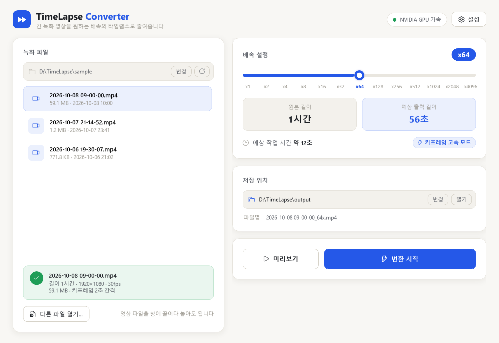
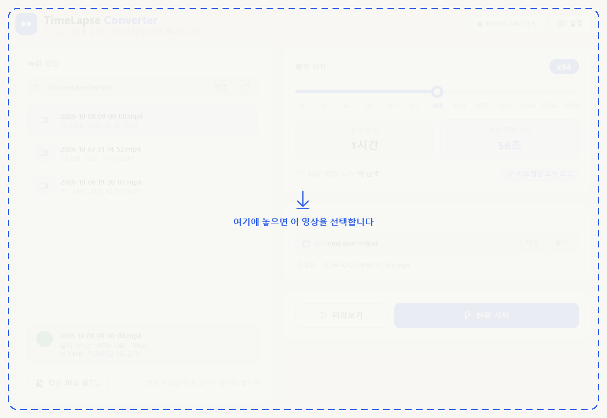
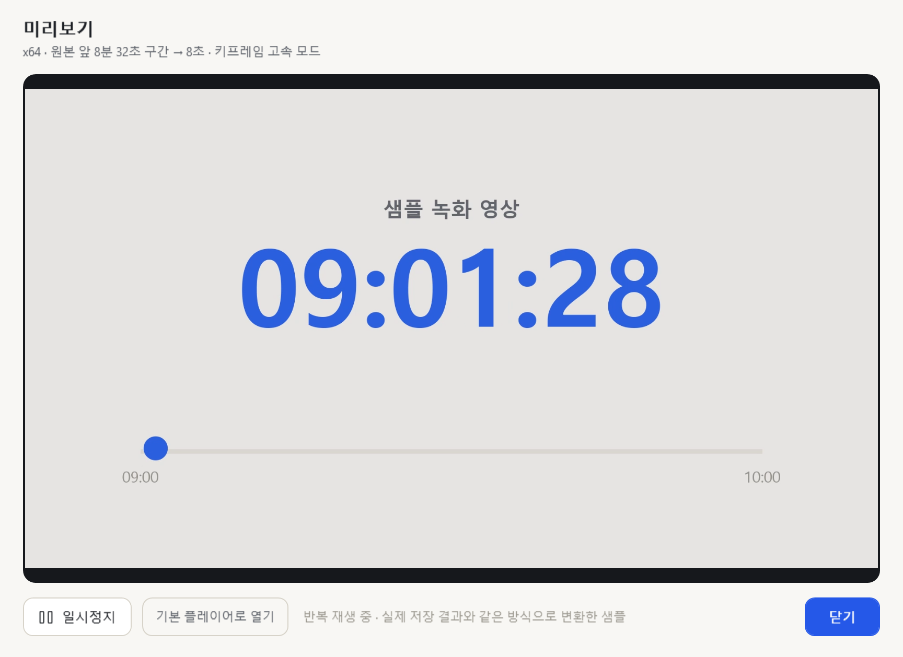
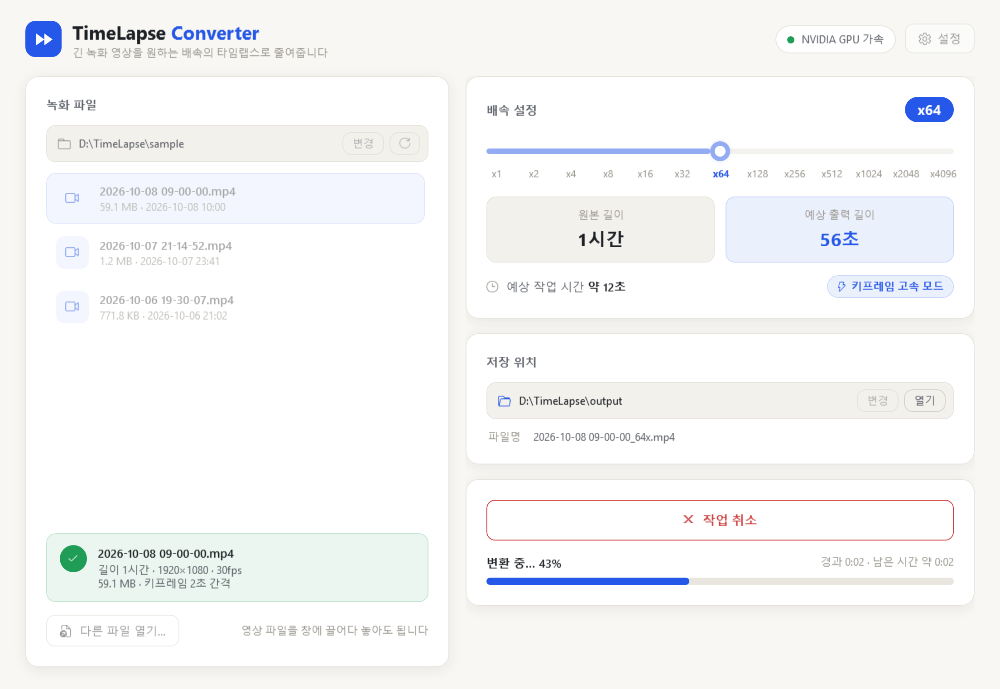
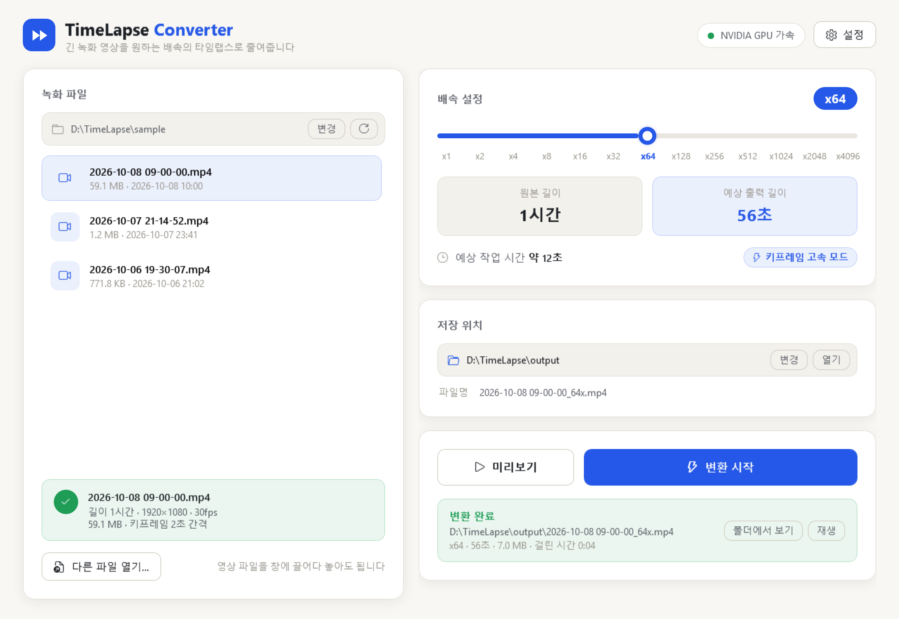
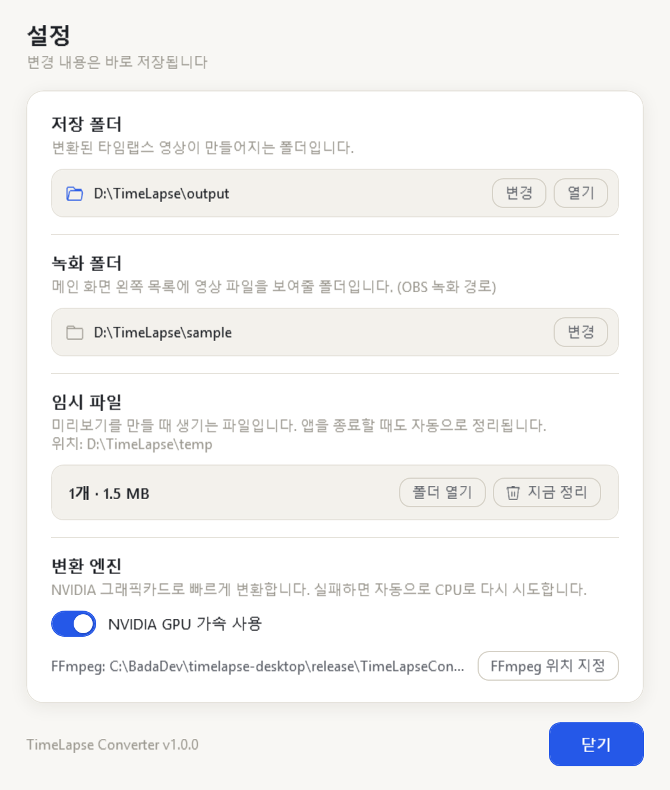

1영상 고르기
왼쪽 목록에서 녹화 파일을 클릭하세요. 아래 초록 상자에 길이·해상도 같은 정보가 나오면 준비 완료입니다.
- 목록에 없는 파일은 다른 파일 열기…
- 탐색기에서 영상 파일을 창 위로 끌어다 놓아도 바로 선택됩니다.
- 지원 형식: MKV, MP4, MOV
- OBS 녹화 폴더가 다르면 [설정] → 녹화 폴더에서 바꿔 두세요.
몇 시간짜리 녹화 영상을 원하는 배속의 짧은 타임랩스로 줄여주는 Windows 프로그램입니다. 설치 없이 압축만 풀면 바로 쓸 수 있어요.

OBS 등으로 녹화한 긴 영상을 골라 배속만 정하면, 유튜브 쇼츠·인스타그램 릴스에 쓰기 좋은 짧은 타임랩스 MP4가 만들어집니다.
x1부터 x4096까지 두 배씩 늘어나는 슬라이더. 고르는 즉시 결과 영상 길이와 예상 작업 시간이 보입니다.
앞부분을 선택한 배속 그대로 짧게 변환해서 바로 재생합니다. 저장하기 전에 느낌을 확인하세요.
영상의 키프레임 간격을 분석해 배속마다 가장 빠른 처리 방식을 자동으로 고릅니다. 따로 설정할 것이 없어요.
NVIDIA 그래픽카드가 있으면 GPU로 빠르게 변환하고, 없거나 실패하면 CPU로 자동 전환합니다.
진행률과 남은 시간을 보여주고, 작업표시줄 아이콘에도 진행 상황이 표시됩니다. 취소하면 만들던 파일은 자동 삭제.
압축을 풀고 exe를 실행하면 끝. 필요한 런타임과 영상 엔진(FFmpeg)이 모두 들어 있습니다.
설치 과정은 없습니다. 압축을 풀고 실행 파일을 더블클릭하세요.
GitHub 저장소의 Releases에서 TimeLapseConverter-v1.0.0-win-x64.zip 파일을 내려받습니다.
zip 파일을 오른쪽 클릭 → 압축 풀기로 원하는 위치(예: D:\TimeLapseConverter)에 풀어 주세요.
압축을 푼 폴더에서 TimelapseConverter.exe를 더블클릭합니다. 바탕화면에 바로가기를 만들어 두면 편해요.
| 용도 | D 드라이브가 있는 PC | D 드라이브가 없는 PC |
|---|---|---|
| 결과 영상 저장 | D:\TimeLapse\output | C:\TimeLapse\output |
| 미리보기 임시 파일 | D:\TimeLapse\temp | C:\TimeLapse\temp |
| 녹화 폴더(목록) | D:\OBS\recording 폴더가 있으면 그곳, 없으면 Windows 동영상 폴더 (OBS 기본 녹화 위치) | |
모든 폴더는 [설정]에서 바꿀 수 있습니다. USB·DVD 드라이브가 D:인 PC는 C 드라이브를 사용합니다.
한 화면 안에서 파일 선택 → 배속 → 저장까지 끝납니다. 왼쪽은 녹화 파일, 오른쪽은 변환 설정이에요.
GPU 가속 · CPU 모드 · FFmpeg 없음. 누르면 설정이 열립니다.
저장 폴더, 녹화 폴더, 임시 파일 정리, GPU 사용 여부.
목록에 보여줄 폴더. [변경]으로 바꾸고 ↻로 새로고침.
폴더 안의 MKV·MP4·MOV 파일이 최신순으로 표시됩니다. 클릭해서 선택.
길이·해상도·프레임레이트·용량·키프레임 간격을 자동 분석.
목록에 없는 파일은 여기서 고르거나 창에 끌어다 놓기.
x1 ~ x4096, 13단계. 아래 숫자를 눌러도 이동합니다.
결과 영상 길이와 예상 소요 시간, 자동 선택된 변환 모드.
결과가 저장될 폴더와 파일명(원본이름_배속x.mp4).
작업 중에는 [작업 취소] 버튼과 진행률이 나타납니다.
다섯 단계면 됩니다. 원본 영상은 읽기만 하고 절대 바꾸지 않아요.
왼쪽 목록에서 녹화 파일을 클릭하세요. 아래 초록 상자에 길이·해상도 같은 정보가 나오면 준비 완료입니다.
슬라이더를 움직이면 예상 출력 길이와 예상 작업 시간이 바로 바뀝니다. 오른쪽 아래 파란 표시는 자동으로 고른 변환 모드예요(7쪽).

▷ 미리보기를 누르면 영상 앞부분을 선택한 배속 그대로 짧게(약 8초) 변환해서 새 창에서 반복 재생합니다.

변환 시작을 누르면 진행률과 경과·남은 시간이 표시됩니다. 작업표시줄 아이콘에도 초록 진행 막대가 나타나요.

알림음과 함께 초록 상자가 나타납니다. 폴더에서 보기로 파일 위치를 열거나 재생으로 바로 확인하세요.

결과 길이 = 원본 길이 ÷ 배속. 녹화 길이별로 어떤 배속을 고르면 되는지 표로 정리했어요.
| 배속 | 1시간 녹화 | 3시간 녹화 | 8시간 녹화 | 변환 모드 (키프레임 2초 기준) |
|---|---|---|---|---|
| x1 | 1시간 | 3시간 | 8시간 | 정밀 |
| x2 | 30분 | 1시간 30분 | 4시간 | 정밀 |
| x4 | 15분 | 45분 | 2시간 | 정밀 |
| x8 | 7분 30초 | 22분 30초 | 1시간 | 정밀 |
| x16 | 3분 45초 | 11분 15초 | 30분 | 고속 |
| x32 | 1분 53초 | 5분 38초 | 15분 | 고속 |
| x64 | 56초 | 2분 49초 | 7분 30초 | 키프레임 고속 |
| x128 | 28초 | 1분 24초 | 3분 45초 | 키프레임 고속 |
| x256 | 14초 | 42초 | 1분 53초 | 키프레임 고속 |
| x512 | 7초 | 21초 | 56초 | 키프레임 고속 |
| x1024 | 3.5초 | 11초 | 28초 | 키프레임 고속 |
| x2048 | 1.8초 | 5.3초 | 14초 | 키프레임 고속 |
| x4096 | 0.9초 | 2.6초 | 7초 | 키프레임 고속 |
파란 숫자 = 쇼츠·릴스에 알맞은 15~60초 길이
| 모드 | 적용 조건 | 방식 | 속도 |
|---|---|---|---|
| 정밀 | x16 미만 | 모든 프레임을 읽고 N번째 프레임만 골라 가장 정확하게. 원본 프레임레이트 유지 | 보통 |
| 고속 | x16 이상 | B-프레임을 건너뛰고 참조 프레임만 읽음. 30fps로 저장 | 빠름 |
| 키프레임 고속 | 배속 ÷ 30 ≥ 키프레임 간격 | 키프레임(I-frame)만 읽음. 30fps로 저장 | 가장 빠름 |
오른쪽 위 ⚙ 설정을 누르면 열립니다. 바꾼 내용은 바로 저장돼요.

변환된 영상이 만들어지는 곳. 변경으로 다른 폴더(외장 드라이브 등)를 고르고, 열기로 탐색기에서 엽니다. 바꾼 뒤에는 기본 폴더로 되돌리기가 나타납니다.
메인 화면 왼쪽 목록에 보여줄 폴더. OBS의 설정 → 출력 → 녹화 경로와 같게 맞춰 두면 녹화가 끝나자마자 목록에서 바로 고를 수 있습니다.
미리보기를 만들 때 생기는 파일의 개수와 용량이 표시됩니다. 지금 정리로 언제든 지울 수 있고, 앱을 종료할 때도 자동으로 정리됩니다.
NVIDIA GPU 가속은 지원되는 PC에서만 켤 수 있습니다. 끄면 CPU로 변환해요. FFmpeg를 다른 위치의 것으로 쓰고 싶을 때는 FFmpeg 위치 지정.
설정은 %APPDATA%\TimelapseConverter\settings.json에 저장됩니다. 이 파일을 지우면 처음 상태로 돌아가요.
Windows 64비트 PC라면 대부분 실행됩니다. NVIDIA 그래픽카드는 있으면 더 빠를 뿐 필수가 아니에요.
| 버전 | 1.0.0 |
| 운영체제 | Windows 10 / 11 (64비트) |
| 설치 | 필요 없음 (포터블). .NET 런타임과 FFmpeg 포함 |
| 용량 | 압축 해제 후 약 445MB (프로그램 63MB + FFmpeg 382MB) |
| 입력 형식 | MKV, MP4, MOV (H.264 · HEVC 등) |
| 출력 형식 | MP4 (H.264), 원본 해상도 유지, 오디오 없음 |
| 화질 | 고화질 고정 (GPU: CQ 18 / CPU: CRF 18) |
| 출력 프레임레이트 | 정밀 모드는 원본 그대로, 고속·키프레임 모드는 30fps |
| 배속 | x1, x2, x4 … x4096 (13단계) |
| 파일명 규칙 | 원본파일명_배속x.mp4 (예: 2026-10-08 09-00-00_64x.mp4) |
| 인터넷 | 사용하지 않음. 모든 처리는 내 PC 안에서만 이루어집니다 |
| 그래픽카드 | 변환 방식 | 설명 |
|---|---|---|
| NVIDIA GeForce GTX 900 시리즈 이상 GTX 10·16, RTX 20·30·40·50 시리즈 등 | GPU 가속 | NVIDIA 드라이버 570 버전 이상(2025년 이후)이 필요합니다. 오래된 드라이버라면 업데이트하세요. |
| NVENC가 없는 NVIDIA GT 1030, 일부 노트북용 MX 시리즈 등 | CPU | 자동으로 CPU 모드로 실행됩니다. |
| AMD Radeon · Intel 내장 그래픽 | CPU | 자동으로 CPU 모드. 결과 화질은 같고, 속도는 CPU 성능에 따라 다릅니다. |
zip 안에서 바로 실행하거나 exe만 따로 옮기면 영상 엔진(ffmpeg 폴더)을 찾지 못합니다. 항상 폴더째로 두세요.
녹화 중인 파일은 길이를 읽을 수 없어 "영상 정보를 읽지 못했습니다"가 나옵니다.
빠르게 재생되는 타임랩스 특성상 오디오는 제거됩니다. 배경음악은 편집 프로그램에서 넣어 주세요.
확인 창이 뜨고, 종료하면 변환이 중단되며 만들던 파일은 삭제됩니다. 원본은 그대로예요.
결과 영상은 1분에 약 100MB 안팎입니다(1080p 기준). 저장 폴더 드라이브에 여유 공간을 확보해 주세요.
서명 없는 개인 프로그램이라 경고가 뜰 수 있습니다. 공식 GitHub 릴리스에서 받은 파일이라면 [추가 정보] → [실행].
이 프로그램은 영상 처리에 FFmpeg(GPL)를 사용합니다. 라이선스 전문은 ffmpeg\FFmpeg-LICENSE.txt에 있습니다.